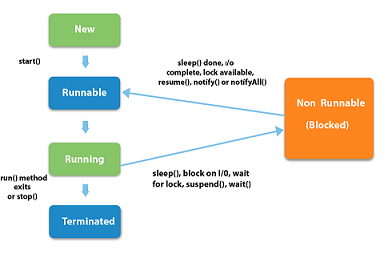

A thread can be in one of the five states. According to sun, there is only 4 states in thread life cycle in java new, runnable, non-runnable and terminated. There is no running state. But for better understanding the threads, we are explaining it in the 5 states. The life cycle of the thread in java is controlled by JVM. The java thread states are as follows:
- New : The thread is in new state if you create an instance of Thread class but before the invocation of start() method.
- Runnable: The thread is in runnable state after invocation of start() method, but the thread scheduler has not selected it to be the running thread.
- Running: The thread is in running state if the thread scheduler has selected it.
- Non-Runnable (Blocked): This is the state when the thread is still alive, but is currently not eligible to run.
- Terminated: A thread is in terminated or dead state when its run() method exits.
Figure 6.2:
States of threads
|
 |